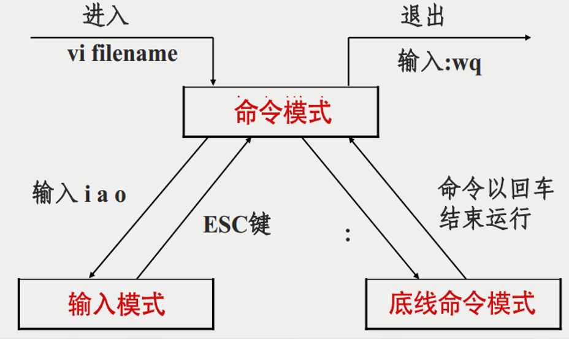

Linux 笔记
常用命令
1 2 | |
| 命令 | 简要介绍 |
|---|---|
su |
切换用户身份，默认切换为超级用户（root）。 |
passwd |
修改用户密码。 |
who |
显示当前登录系统的用户信息。 |
date |
显示或设置系统日期和时间。 |
echo |
输出字符串或变量的值到终端。 |
ps |
显示当前运行的进程信息。 |
kill |
终止指定的进程。 |
ls |
列出目录内容。 |
cat |
查看文件内容，或将多个文件内容连接输出。 |
more |
分页查看文件内容。 |
cd |
切换当前工作目录。 |
cp |
复制文件或目录。 |
pwd |
显示当前工作目录的绝对路径。 |
mv |
移动或重命名文件或目录。 |
rm |
删除文件或目录。 |
mkdir |
创建新目录。 |
grep |
搜索文件中匹配指定模式的行。 |
sort |
对文本文件内容进行排序。 |
tail |
查看文件的最后几行内容。 |
chmod |
修改文件或目录的权限。 |
chown |
修改文件或目录的所有者或所属组。 |
adduser |
添加新用户（通常是 useradd 的交互式封装）。 |
deluser |
删除用户（通常是 userdel 的交互式封装）。 |
gpasswd |
管理组密码或修改组成员。 |
newgrp |
切换到新的用户组。 |
nohup cmd & |
在后台运行命令，并忽略挂起信号（退出终端后命令仍继续运行）。 |
fg |
将后台运行的任务切换到前台。 |
bg |
将暂停的任务切换到后台运行。 |
简答题知识点
Linux 的标准目录结构及其存放内容（10个主要一级目录）
| 目录 | 描述 |
|---|---|
| /bin | 存放 Linux 最常用的基本命令，如 ls, cd, cp, mkdir, date，cat等 。 |
| /sbin | 存放 系统管理员的系统管理命令，如 fdisk, init, ifconfig, reboot 等 。 |
| /root | 超级用户的主目录 |
| /etc | 存放 各种配置信息，如网络配置文件、文件系统、系统配置文件、设备配置信息、设置用户信息等都在这个目录下。 |
| /dev | 存放 设备文件，这种文件与普通文件不同，没有真正的内容，只是各种设备的名称，用户像访问文件一样访问设备 |
| /proc | 存放 系统信息，该目录下的文件不是存于硬盘中，是系统初启时在内存中产生的。关闭计算机时它会消失，每次重启时又重新生成 |
| /var | 存放 系统记帐信息、日志文件 |
| /usr | 用户的很多 应用程序和文件几乎都存放在这个目录下。这里有许多目录，/usr/bin中存放软件包程序。如bin, sbin, lib, src， X11R6等 |
| /home | 存放用户的主目录 |
| /lib | 存放系统最基本的 动态连接库，几乎所有的应用程序都要用到这个目录中的共享库 |
| /boot | 存放系统启动时要用到的程序。我们在使用 grub 或 lilo 引导 Linux 的时候，会用到这里的一些信息 |
| /tmp | 存放 临时数据 |
| /mnt | 一般为空，通常临时将别的文件系统挂在该目录 |
源代码安装的常见的方法和过程
基于 CMake 的、基于脚本的、基于 ./configure 的
- 释放
TAR包 - 查看并阅读包内附带的软件安装说明
- 进行编译准备。
--prefix指的是安装路径，--with指的是安装本文件所依赖的库文件
1 | |
- 进行编译。经过执行
./configure会产生MakeFile文件，运行make命令进行编译 - 进行软件安装。执行
make install安装软件 - 清除临时文件。执行
make clean清除编译过程中产生的临时文件
Linux 如何使用设备，设备的分类，常用的设备名有哪些（硬盘、终端、空设备）
Linux 内核在探测到设备硬件后，会在 /dev 目录下创建其对应的设备文件，此设备文件将关联该设备的驱动程序，通过访问此设备文件即可访问到文件所关联的设备。
- 使用：Linux 使用设备文件来与硬件设备交互。设备文件是特殊的文件，通常位于
/dev目录下，用户或程序通过对这些文件的操作（如读写）来与硬件设备通信。 - 分类：
- 字符设备。以字符为单位进行数据传输，通常是顺序访问
- 块设备。以块为单位进行数据传输，支持随机访问
- 网络设备。不通过
/dev目录管理，而是通过网络接口（如eth0、wlan0）进行操作
- 常用设备名：
/dev/sdX、/dev/tty、/dev/null、/dev/zero
在 Linux 系统中怎样运行脚本文件？举例说明脚本文件的多种运行方式
- 在子
shell中运行脚本文件chmod a+x script.sh && ./script.shbash script.sh
- 在当前
shell中运行脚本文件source script.sh. script.sh
怎样进入，退出 vi/vim。vi/vim 的三种工作模式如何转换。定位、查找字符串方法（任何一种即可）
- 进入：
vi/vim file_name - 退出：
:q!强制退出，:wq保存并退出，:q退出不保存 - 三种工作模式：
- 命令模式：按
i进入插入模式，按ESC进入命令模式 - 插入模式：按
i或a或o进入一般模式，按ESC进入插入模式 - 底行模式：按
:进入低行模式，按i进入插入模式，按ESC进入命令模式
- 命令模式：按
- 查找：在命令模式下使用
/或?进行查找，/向下查找，?向上查找，n向下查找下一个，N向上查找上一个

Linux 系统中的命令补全的用法，Linux 系统的输入、输出重定向的用法
命令补全：主要通过按下 Tab 键实现，如果有多个可能的命令，按 Tab 键两次，会列出所有可能的选项
输入重定向：wc -l < input.txt 或 ls -l | grep "txt"
| 符号 | 功能 |
|---|---|
< |
将文件内容作为命令的标准输入。 |
<< |
Here Document，用于将多行字符串作为命令的标准输入。 |
<<< |
Here String，用于将单行字符串作为命令的标准输入。 |
输出重定向：ls -l > output.txt 或 echo "Hello again!" >> output.txt
| 符号 | 功能 |
|---|---|
> |
将标准输出重定向到文件（覆盖文件内容）。 |
>> |
将标准输出追加到文件末尾（不覆盖文件内容）。 |
2> |
将标准错误重定向到文件（覆盖文件内容）。 |
2>> |
将标准错误追加到文件末尾（不覆盖文件内容）。 |
&> |
将标准输出和标准错误同时重定向到文件（覆盖文件内容）。 |
&>> |
将标准输出和标准错误同时追加到文件末尾（不覆盖文件内容）。 |
Linux系统的特殊权限 SUID（文件）、SGID（文件和目录）、SBIT（目录）
SUID（Set User ID）：只对文件有效，当一个文件设置了 SUID 位并被执行时，执行该文件的用户会临时获得文件所有者的权限，而不是以执行者本身的权限运行。
SGID（Set Group ID）：对文件和目录有效，当一个文件设置了 SGID 位并被执行时，执行该文件的用户会临时获得文件所属组的权限，而不是以执行者本身的组权限运行。目录下创建的目录会继承目录的 SGID 位。
SBIT（Sticky Bit）：对目录有效，当一个目录设置了 Sticky Bit 时，目录中的文件只能被文件的所有者或 root 用户删除或修改，即使其他用户对该目录有写权限。
Linux C 语言程序编译方法，调试方法
编译器就是将高级程序语言转换为执行效率更高的机器语言的程序，GCC 也是使用最为普遍的一种编译器。
| 选项 | 说明 |
|---|---|
| -E | 预处理后即停止，不进行编译、汇编及连接 |
| -S | 编译后即停止，不进行汇编及连接 |
| -c | 汇编源文件，但不进行连接 |
| -o file | 连接，指定输出文件为 file |
分阶段：
1 2 3 4 | |
一步到位：
1 | |
调试：
1 2 | |
符号链接和硬链接文件的区别，怎样创建链接文件
| 特性 | 硬链接（Hard Link） | 符号链接（Symbolic Link） |
|---|---|---|
| inode | 共享相同的 inode，与原文件相同 | 有自己的 inode，与原文件不同 |
| 文件系统限制 | 只能在同一文件系统中创建 | 可以跨文件系统 |
| 目录支持 | 不支持对目录创建硬链接 | 支持对目录创建符号链接 |
| 文件依赖性 | 硬链接独立存在，删除原文件不影响硬链接 | 符号链接依赖原文件，删除原文件会导致断链 |
| 大小 | 与原文件相同 | 符号链接的大小是目标文件路径的长度 |
| 修改内容 | 修改硬链接或原文件会同步更新 | 修改符号链接指向的文件会更新原文件 |
| 删除文件 | 删除硬链接不会影响文件数据，只有所有硬链接删除后文件才会被删除 | 删除符号链接不会影响原文件 |
创建硬链接：
1 | |
创建符号链接：
1 | |
Linux 系统中管道的功能
它通过符号 | 实现，允许多个命令组合在一起执行
- 连接命令：将一个命令的输出作为另一个命令的输入
- 与过滤器结合：筛选、格式化和处理数据
Linux 下的隐含文件如何标识和显示
在 Linux 文件系统中，任何文件或目录的名称以 . 开头都会被视为隐含文件。使用 ls -a 或 ls -A。
Linux 系统的主要应用领域
Linux 系统的主要应用领域包括：
- 传统企业级服务器应用场景
- 嵌入式、物联网、边缘计算等应用场景
- 智能手机、平板电脑等移动终端
- 云计算、区块链、大数据、深度学习等应用场景
- 个人桌面操作系统
- 服务器（Web、数据库、邮件、云计算等）。
- 嵌入式系统（智能设备、物联网、汽车电子等）。
- 云计算与虚拟化（容器、分布式计算等）。
- 超级计算机（高性能计算）。
- 桌面操作系统（开发、教育、科研等）。
- 网络设备（路由器、防火墙等）。
- 网络安全（渗透测试、日志分析等）。
- 科学研究与教育。
- 游戏开发与运行。
- 企业应用（ERP、存储、邮件系统等）。
- 多媒体与创意（视频、音频、图像处理）。
综合题
计划任务 cron 的建立方法及管理
语法表达式：
1 2 3 4 5 6 7 8 | |
方法一
- 利用
vi/vim创建cron作业列表文件，假设文件命名为mycron。 - 按照上述格式创建好任务文件
- 使用命令
crontab mycron加载mycron作业列表文件（其实是被写入了/var/spool/cron/crontabs/username中）
方法二
- 使用命令
crontab -e进入vim编辑器 - 按照上述格式编辑好作业列表文件
- 保存退出
文件基本操作综合
可以联系数据库中的增删改查想一想，至少有添加文件、删除文件、修改文件、查看文件。
所对应的命令有 touch、rm、cp、mv、cat、less、head、tail、grep、find。
提升普通用户成为管理员（ /etc/sudoers 文件的配置）
直接编辑 /etc/sudoers 文件可能会导致语法错误，从而使系统无法正常使用 sudo。推荐使用 sudo visudo 工具来编辑 /etc/sudoers 文件。
1 2 3 4 5 6 | |
多用户管理（用户和组管理）
添加用户：
1 | |
删除用户：
1 | |
添加组：
1 | |
删除组：
1 | |
自己加入新组：
1 | |
把别人加入新组：
1 | |
查看自己的组：
1 | |
将用户加入组：
1 | |
从组中删除用户：
1 | |
设置组的管理员：
1 | |
查看系统上的组：
1 | |
Shell 脚本编程
参考实验课 Shell 脚本例子
自己遇到的注意的点：
- 判断字符是否为空要用
[[ X"$msg" == "X" ]] - 每条
case后面要加双分号